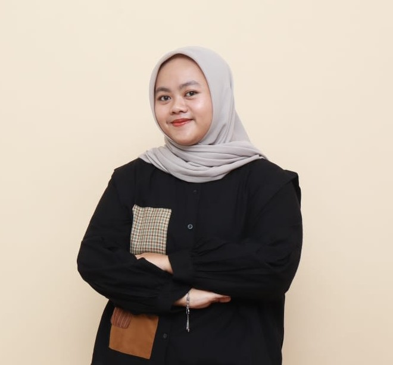

Data Analyst • Business Intelligence Analyst
Data Science graduate with a year of internship experience in procurement analytics, dashboard development, and workflow automation. I turn raw, messy data into decisions — through data cleaning, visualization, and reporting with Python, SQL, Excel, and Google Looker Studio. I also bring hands-on machine learning and NLP experience from academic projects.

Data analyst focused on business intelligence — building dashboards, defining KPIs, and turning messy operational data into decisions. Recently completed a year-long data analyst internship in procurement analytics at PT Tangkas Cipta Optimal (TACO), alongside academic work in NLP and sentiment analysis of Indonesian e-commerce reviews.
Where I've worked and what I've accomplished
Data Analyst Intern — Procurement Division
Supported procurement analytics through reporting, dashboard development, and vendor performance monitoring — translating stakeholder needs into tools that guided day-to-day decisions.
The problem, what I did, and what I found — dashboards and code are one click deeper
Problem: Procurement data lived in scattered, manual spreadsheets, so bottlenecks in the buying process and late deliveries were caught far too late.
Problem: 7+ years of passenger reviews sat unstructured — no clear view of what actually drives satisfaction, or where it breaks down.
Problem: Thousands of informal, slang-heavy Indonesian product reviews held useful sentiment signal — but were far too messy to turn into product insights.
Power BI dashboard tracking sales KPIs and customer behavior for faster commercial decisions
Deep-learning model estimating crowd density from images for public-space monitoring
What I use to get from raw data to decisions
Where I learned the fundamentals — and kept building on them
Bachelor of Computer Science — Data Science
Relevant coursework: Data Mining & Analytics, Database Management, Machine Learning, Natural Language Processing.
Created 20+ educational content pieces on data science, AI, and machine learning to boost student engagement, and managed social media channels promoting club activities.
Secured partnerships and led fundraising to fund the event, while managing budgeting, timelines, and coordination with external partners.
Promoted Gojek's services to the student community, strengthening communication and leadership skills.
Open to Data Analyst and BI Analyst roles — feel free to reach out